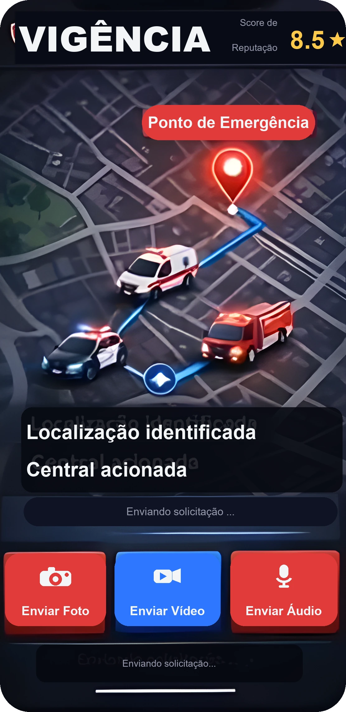
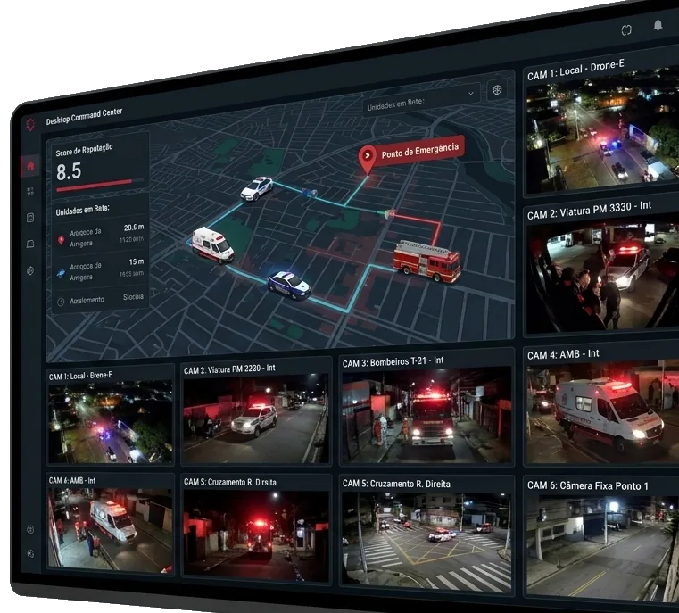

Segurança na palma da mão
Vigência é a plataforma que pode salvar vidas em segundos,
auxiliando os serviços de emergência com poucos cliques.
Prejuízo em números
Prejuízo anual estimado no Brasil com falsas ligações para serviços de emergência. Cada trote consome combustível, equipamentos e horas de equipes que poderiam estar em atendimentos reais, gerando um custo que recai sobre toda a sociedade.
Ligações para serviços de emergência em épocas de alta são trotes. Esse volume sobrecarrega as centrais de atendimento, ocupa as linhas e atrasa a resposta a quem está diante de uma emergência de verdade e precisa de socorro imediato.
Trotes registrados pelo SAMU-DF em apenas um ano. Por trás de cada chamada falsa há uma ambulância a menos disponível na cidade, um recurso desviado e, muitas vezes, um atendimento essencial que chega mais tarde do que deveria.
Triagem inteligente, do primeiro toque ao socorro
O sistema analógico depende de chamada, disponibilidade e acesso. O Vigência substitui tudo em apenas alguns segundos.
Hoje uma emergência começa por uma ligação, e cada segundo conta. Quando a linha está ocupada por um trote, quem precisa de socorro fica esperando. Foi esse gargalo que fez o Vigência nascer.
O aplicativo faz a triagem já no primeiro contato: identifica quem pede ajuda, mostra onde a pessoa está e reconhece o trote antes que uma equipe saia. Com isso a central deixa de mobilizar recursos por engano, e o atendimento chega mais rápido a quem realmente depende dele.
Como funciona no seu celular
Do pedido de ajuda até a viatura a caminho, tudo é feito em poucos toques no celular. O app confirma quem está chamando e mantém em sigilo a posição das equipes.

Acionamento em 2 cliques
Dois toques bastam para pedir socorro, sem precisar telefonar nem esperar a linha desocupar.
GPS exato em tempo real
O celular manda a localização exata sozinho, então ninguém perde tempo tentando descrever onde está nem passa o endereço errado.
Foto, vídeo e áudio na hora
Dá para enviar foto, vídeo e áudio direto para a central, que já vê o que está acontecendo antes de despachar uma equipe.
Identidade verificada e reputação
Cada usuário tem login e um score de reputação. Isso segura os trotes e ajuda a central a priorizar os chamados de confiança.
Sigilo tático
No mapa do cidadão, a posição das viaturas fica escondida. Assim ninguém usa o app para rastrear ou emboscar as equipes.
Painel tático
Do outro lado do chamado está a central. O painel reúne apenas os pedidos que passaram na triagem e organiza, em tempo real, tudo o que a equipe precisa para decidir com rapidez.
- Só chamados verificados. Trotes e chamadas mudas são filtrados antes de chegar à central, liberando as linhas para emergências reais.
- Visão em tempo real. Cada ocorrência aparece com tipo, localização por GPS e status atualizado a cada segundo.
- Equipe e tempo de resposta. O painel mostra qual equipe foi acionada e há quanto tempo, facilitando o despacho e o acompanhamento.
- Priorização por gravidade. Os casos mais críticos sobem na lista, garantindo que o socorro chegue primeiro a quem mais precisa.

Objetivos de performance (S.M.A.R.T.)
Uma meta clara para transformar tecnologia em respostas mais rápidas e recursos melhor empregados.
Específico
Desenvolver um app inteligente de emergência com autenticação.
Mensurável
Atingir -20% de acionamentos falsos (trotes).
Alcançável
Viável através do cruzamento de GPS, mídia e score de reputação.
Relevante
Salvar vidas, otimizar recursos e proteger as equipes de rua.
Temporal
Implantação e análise de resultados em 36 meses (3 anos).
Cronograma de expansão
Quatro fases para validar, integrar e levar o Vigência a todo o território brasileiro.
Desenvolvimento e MVP
Foco: Programação, infraestrutura e testes fechados de segurança.
Piloto em órgãos parceiros
Foco: Integração com PM, Bombeiros e SAMU locais e testes no painel.
Regionalização
Foco: Expansão estadual e análise de métricas de redução de trotes.
Expansão nacional
Foco: Escalabilidade em nuvem para operação em todo o território brasileiro.
Equipe de projeto
Uma equipe multidisciplinar que une visão, engenharia e desenvolvimento para transformar o Vigência em uma resposta real para emergências.